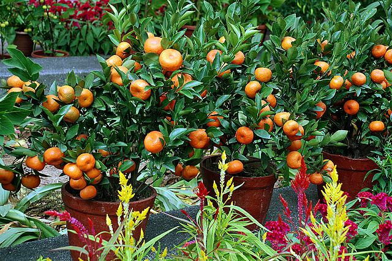

Em uma situação de crise econômica, guerra ou instabilidade, a melhor maneira de se manter em conta, é sobrevivendo por meios alternativos, e cultivando suprimentos necessários para sua sobrevivência. E nisso se releva a importância do plantio de hortaliças para quem quer ter um meio seguro de alimentação. Com esta idéia em mente, esta categoria vai cubrir os frutos, ou hortaliças-fruto, suas vantagens, quais tipos, como plantar e seu valor alimentício.
Nesta categoria de hortaliças, são vegetais cujas partes aproveitáveis para o consumo são os frutos.
Fazem parte deste grupo de hortaliças as melancias, os quiabos, as ervilhas, os pimentões, os tomates, os jilós, entre outros.
A temperatura é o fator mais importante para as hortaliças-frutos (abóbora, chuchu) que pertencem a família botânica das cucurbitáceas.
Em condições abaixo de 12ºC, o crescimento da planta paralisa. Não tolera geadas. As temperaturas mais adequadas para as cucurbitáceas estão entre 18 a 25ºC.
Nos primeiros estágios de desenvolvimento, as plantas são exigentes em água, porque as raízes são ainda superficiais e o armazenamento de água na superfície é praticamente nulo.
Área de solos profundos, bem estruturados e drenados, que tenham topografia plana a levemente ondulada são as mais indicadas. O solo ideal é o areno-argiloso, fértil e rico em matéria orgânica.
Dentre os vários tipos de verduras se destaca a abóbora, chuchu, pimentão e tomate como os mais comuns.
Este artigo vai cobrir os respectivos plantios e métodos de cultivação abaixo:
O plantio pode ser feito de duas maneiras: depositando as sementes diretamente na terra ou cultivando mudas, depositadas em copinhos ou vasos de papel ou plástico.
Para o método com sementes, o correto é colocar de duas a três por cova, entre 1 cm e 3 cm de profundidade. Se a optar por mudas, o aconselhável é transplantá-las para a terra após o surgimento de duas folhas.
As covas devem ter dimensões aproximadas de 40 cm de comprimento, 30 cm de largura e 25 cm de profundidade, já os sulcos devem ter cerca de 30 cm de largura e 25 de profundidade.
O cultivo do chuchuzeiro adapta-se melhor em áreas com temperaturas amenas, variando entre 15 ºC e 25 ºC. Durante o inverno, o frio intenso e as geadas impedem o desenvolvimento do plantio. A queda de flores é provocada por calor e chuvas em excesso, além de doenças fúngicas.
Pouco exigente em solo, sendo inclusive muito tolerante à acidez, o chuchuzeiro tem, no entanto, produtividade mais elevada quando encontra solos de textura média, soltos e leves, com boa fertilidade ou adequadamente adubados.
A planta não tolera excesso de água e o solo deve ser bem drenado. Os chuchus-semente devem ser plantados após a pré-brotação.
Para isso, são colocados sobre o leito de terra em local sombreado, ventilado e ligeiramente úmido, um ao lado do outro. Os maduros apresentam a semente germinada em 15 dias, porém, somente devem ser plantados quando o broto atingir cerca de 12 centímetros.
As temperaturas mais adequadas para o plantio vão de 21 a 27 graus célsius. Em regiões de clima temperado, o cultivo deve ser feito nos períodos menos frios e com menos riscos de geadas.
Em locais frios ou com altitudes acima de 800 metros, deve-se fazer a semeadura do pimentão entre os meses de agosto e fevereiro.
Certifique-se que o solo seja fértil e que o pH é seja de neutro à levemente alcalino.
Para plantações em larga escala, recomenda-se cuidar do solo pelo menos cinco meses antes da implantação da cultura e que estas áreas não tenham recebido plantas da família Solanaceae, como batata, jiló, pimentas, pimentão e berinjela.
O solo ideal para plantar tomates deve possuir pH entre 5,5 a 7, com boa drenagem. A camada superficial do solo deve estar sempre bem irrigada e não deve ficar encharcado para evitar a proliferação de doenças e demais pragas. Um solo fértil faz toda a diferença no desenvolvimento da planta.
Na hora de plantar os tomates é preciso muita atenção por parte do produtor. É recomendado realizar pequenas mudas do tomateiro antes de colocá-lo no solo.
Em uma sementeira, coloque de duas a cinco sementes em cada buraco, com cerca de 1cm de profundidade. Caso opte por tomates menores ou do tipo anão, faça o plantio diretamente no vaso ou na jardineira escolhida.
Sem contar que as hortaliças-frutos, são ricas em pró-vitamina A, vitamina B, vitamina C e vitamina K: